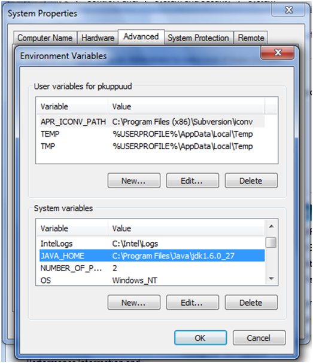
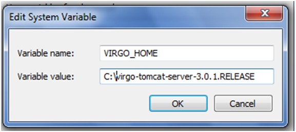

Note: This is not required if using the SOCIETIES Virgo Distribution
The Virgo Web Server from EclipseRT is a completely module-based Java application server that is designed to run enterprise Java applications and Spring-powered applications with a high degree of flexibility and reliability. It offers a simple yet comprehensive platform to develop, deploy, and service enterprise Java applications. The project web site is www.eclipse.org/virgo/download. Its installation and use is described in detail because it represents one of the most important software components that Third Party developers will interact with developing their services.
The Virgo Tomcat Server, or VTS for short, requires Java SE 6 or later to be installed, and is available as a zip file from www.eclipse.org/virgo/download
To install Virgo Tomcat Server on Linux, unzip the distribution package to the desired installation directory. For example, to install into /opt:
prompt$ unzip virgo-web-server-3.0.1.RELEASE.zip -d /opt
This creates a directory called virgo-web-server-3.0.1.RELEASE under /opt.
Virgo Tomcat Server requires write access to the installation directory, in this case /opt/virgo-web-server-3.0.1.RELEASE. Typically this means it must be run as the user that installed it, or the installation directory's ownership must be changed. To install the Virgo Tomcat Server on Windows, unzip the distribution package to the desired installation directory. Note that both Windows and Java have some issues with long file names and file paths, so we recommend installing to the root directory of your chosen drive.
Two environment variables have to be set up for VTS to run reliably, namely JAVA_HOME and VIRGO_HOME.
On Linux, edit the .profile file in your home directory to add the VIRGO_HOME and JAVA_HOME environment variables. For example, if you installed into /opt:
export VIRGO_HOME=/opt/virgo-web-server-3.0.1.RELEASE/
export JAVA_HOME=/user/java/ jdk1.6.0_27
export PATH=$JAVA_HOME/bin:$PATH
To verify the setting of JAVA_HOME, issue the command $JAVA_HOME/bin/java -version from a new terminal window and ensure that the command completes successfully and reports a Java version 1.6.x (denoting Java 6) or greater.
On Windows, from the Start menu, open the Control Panel and double-click on "System", select the ""Advanced" tab, select "Environment Variables". Next, click the "New" button in the "System Variables" section

This will display the "New System Variable" window. Enter VIRGO_HOME as the ""Variable name" and the installation directory as the "Variable value". Click OK

Repeat the procedure for setting the JAVA_HOME environment variable. To verify the setting of JAVA_HOME, issue the command "%JAVA_HOME%"\bin\java -version from a new command prompt and ensure that the command completes successfully and reports a Java version 1.6.x (denoting Java 6) or greater.
To start Virgo Tomcat Server run the startup.sh (Linux) or startup.bat (Windows) script. For both platforms, the script is located in the VIRGO_HOME/bin directory.
Once Virgo Tomcat Server has started, the console will display a log message similar to the one shown below, along with other status messages:
[2009-11-30 12:12:12.111] Thread-2
To start Virgo in "clean mode", add the -clean option as a suffix of the script invocation. When you start Virgo Tomcat Server in clean mode, the startup script removes the VIRGO_HOME/work directory (and hence all running applications) as well as all trace, log and dump files. It leaves the VIRGO_HOME/repository and VIRGO_HOME/pickup directories untouched, which means that any applications previously hot deployed will be automatically reinstalled.
Finally, to start Virgo in debug mode, launch the startup script with the following parameters:
startup.[bat|sh] -debug 8001 -suspend
This will start the Virgo debug agent, listening on port 8001, and suspend the Virgo boot procedure until a debugger attaches to the agent.
This feature will be invaluable when debugging a 3rd party service that has been deployed into or that interacts with a SOCIETIES node running on Virgo.
Once the server is started, you might access its web-based console using the following url: http://localhost:8080/admin (input "admin" as ID, and "springsource" as password). With the default configuration, server logs are available at VIRGO_HOME \serviceability\logs
Build the project using maven and deploy the jar to the virgo pickup directory
Start virgo server in debug mode as follows.
VIRGO_HOME\bin\startup.bat -debug 8000Or
VIRGO_HOME\bin\startup.bat -debug -suspend
Note: The -suspend option will suspend Virgo's Virtual Machine until a debugger is attached to the specified port (i.e. it will pause the boot of the Virgo server until a debug session is initiated from Eclipse)
From Eclipse navigate to run → debug configuration:
This will open the Debug Configuration window (Figure 5). Select "Remote Java Application" icon on left side, Right click and say "New" (give your preferred name of your config - in this case "Virgo_External_Debug"). After clicking on New, Eclipse will create a new Remote Java Application configuration for your selected project.
Provide the host name and port on which your process is listening for debugger connections. Check the "Allow termination of remote VM" check box if you would like to close the remote Java application from within Eclipse.
The debug configuration is ready for use, as long as you remember to start the target application (in our case, Virgo) before connecting the Eclipse remote debugger to it. You can now debug by going to "Debug Configurations" selecting your project in "Remote Java Application" and clicking on "DEBUG".

If you want to perform line-by-line executions of the debugged code, you will have to tell the debugger which locations to search for the matching code.

Make sure you have built the code recently and have set breakpoints at the desired locations in the code before starting the debug process, and enjoy your remote Virgo debugging sessions.
Note: Eclipse EE edition is required to run Virgo Tomcat server inside eclipse. Running and debugging Virgo instances from within the development environment is a handy feature for developers that will save them from switching back and forth across two different contexts (the IDE and the VIRGO server). To set up this feature, first install the "Eclipse Virgo Tools" package from the repository: http://download.eclipse.org/virgo/milestone/IDE . In order to do so, go to Help->Install New Software. There you can add the repository with the ADD button and you will find the packet once the repository is added.

To add the server and the view console go to Windows->show view->servers. This will add the "server perspective" view, right click press new->server then filter for virgo and select the server already configured. You should see something similar to

To configure Virgo server inside eclipse goto Windows->Preference->Server option from the left panel and then choose runtime environment. On the right side you may see an option to add servers, click "add" and type the server name "Virgo", then click "next"to type the server name, server installation directory and JRE. Click "Ok" to finish.

Finally, use the start and debug buttons (white "play" icon over green circle and bug icon respectively) to run the server in required mode and view the server console window for various logs. Note: You can drag a project and drop it directly on the virgo server entry in the "Servers" tab for direct deployment from within Eclipse (instead of dropping a jar inside the VIRGO_HOME\pickup directory which has a directory watcher thread scanning it for changes in its content).
Double click Virgo Server to view various attributes and properties as shown in the following image.